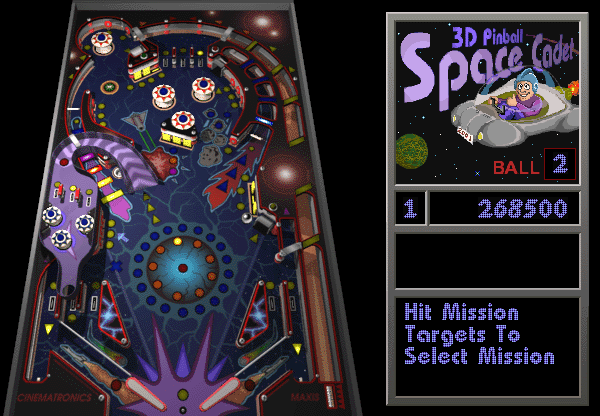

Como treinar um agente de aprendizado por reforço no 3D Pinball me fez descobrir que eu estava medindo a coisa errada.

O agente parece estratégico até você atrasar as ações dele em um tempo de reação humano. Aí ele perde para apertar botões ao acaso. A vantagem dele é controle reativo de altíssima frequência, não estratégia.
Ler o artigo completo (PDF, 13 páginas)